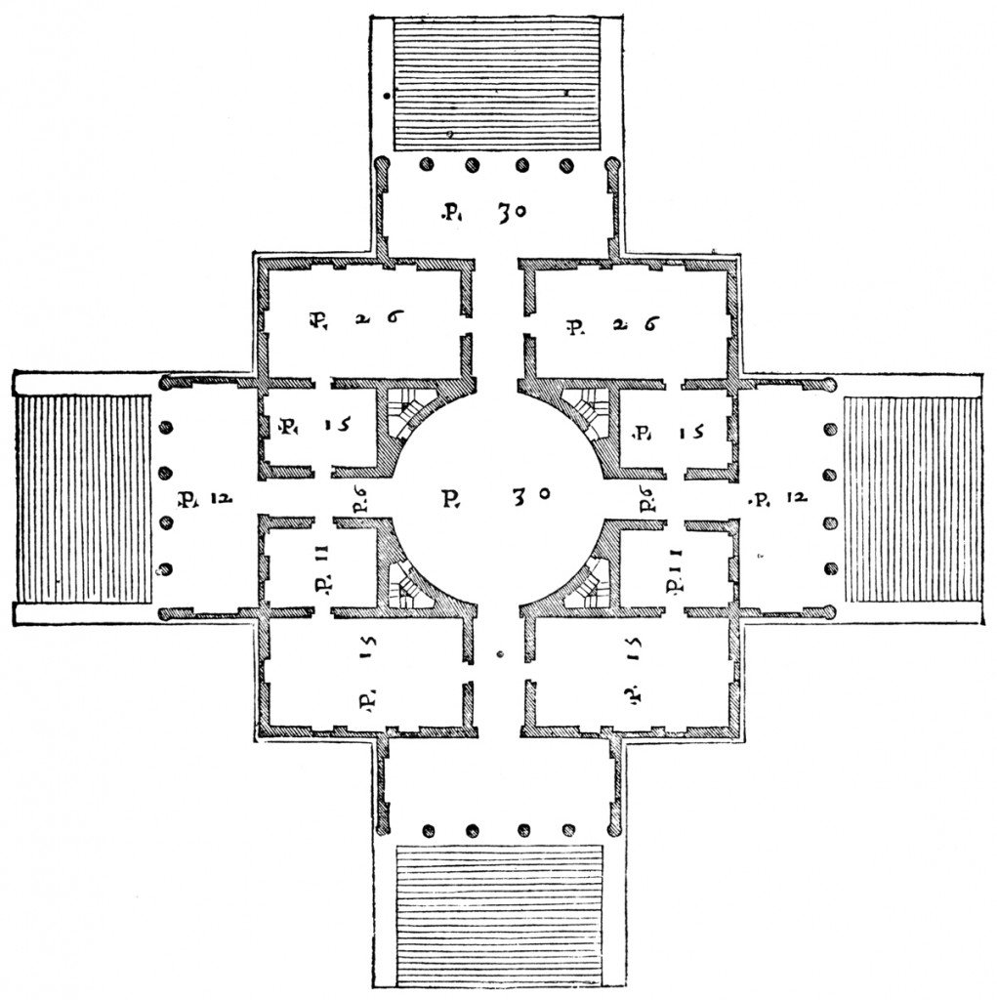
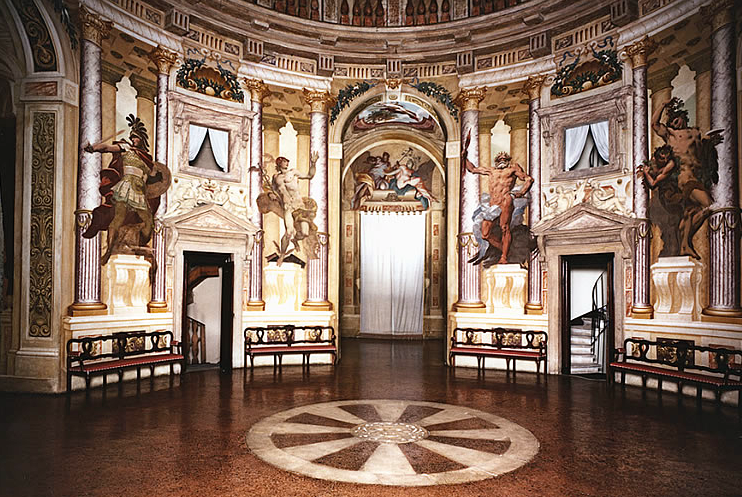
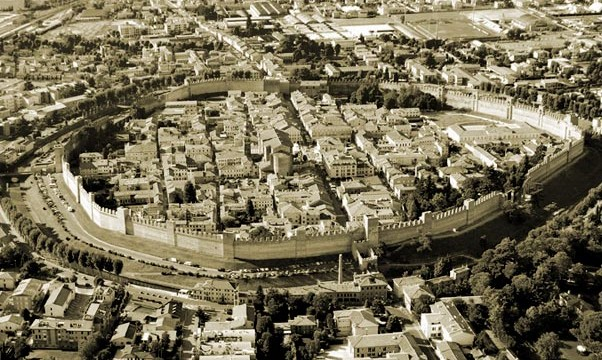
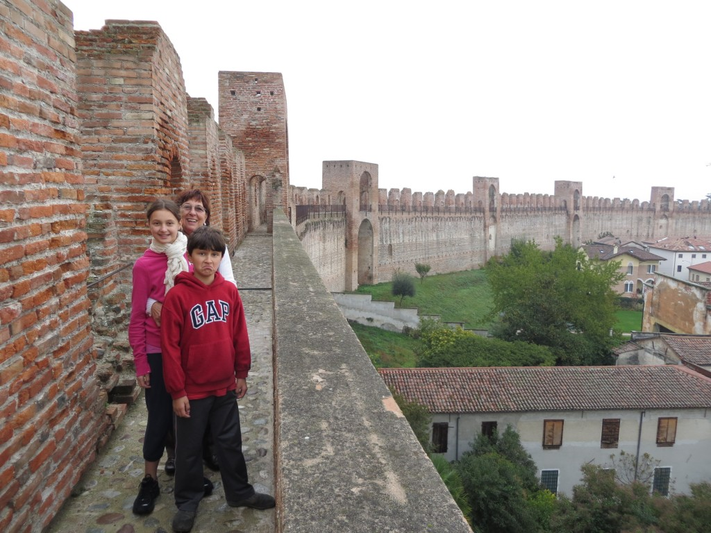
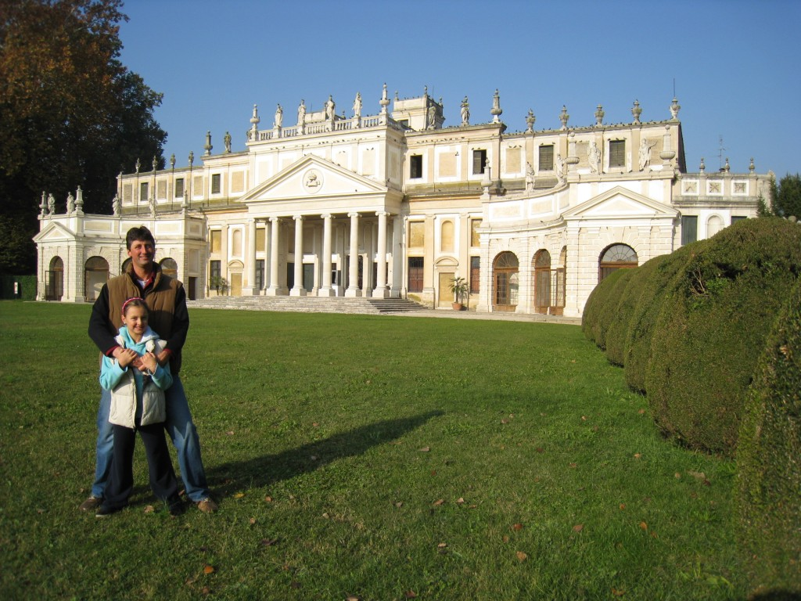
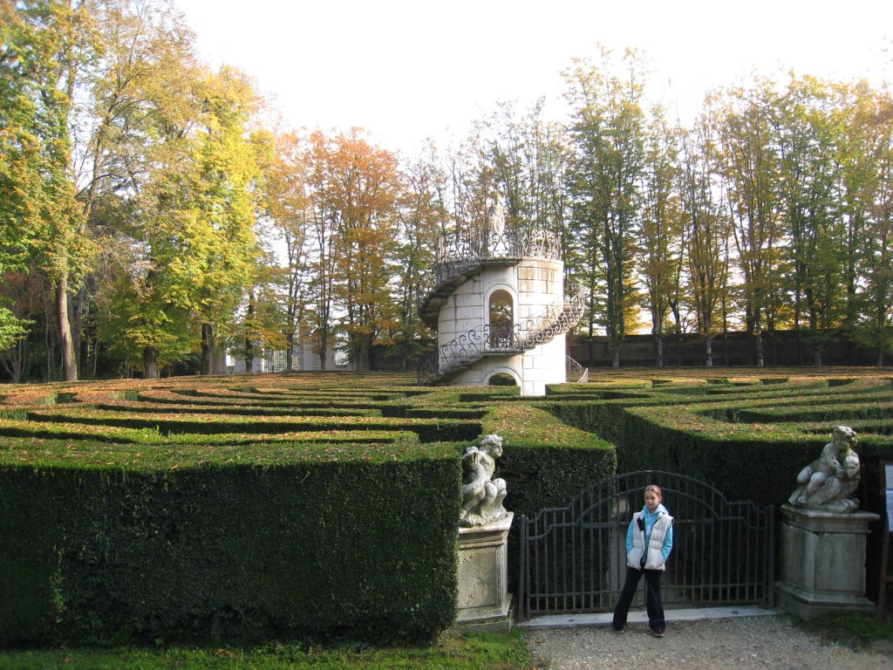
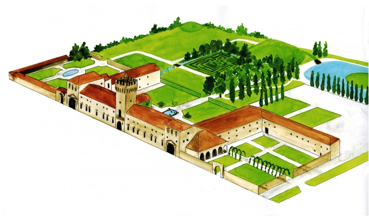
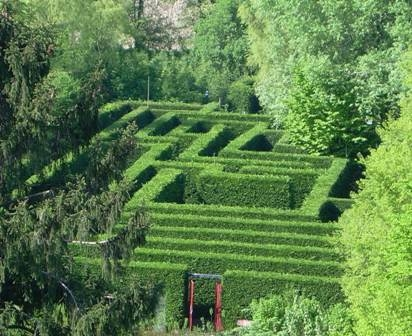

The 4 corners correspond to the 4 cardinal points and, as a result, the villa is always embraced by natural light. Also, because it sits on top of a hill, one can enjoy a nice view from each side. Palladio purposely designed the exterior to look different from its interior. From the outside you see three floors: the lower one for the operational activities (kitchen, laundry facilities, servants headquarters, etc.); the middle one for the master, his family and their daily commitments (receptions, business, leisure, etc.); and the upper one designed to lodge the bedrooms. However, once you are inside, you only see the middle floor, or main floor, without realizing that there's more above it and below it, because the access to the upper and lower floors is hidden in a very clever way: through tiny doors leading to spiral staircases, as you can see below in the image I "borrowed" from the villa website.
This is the heart of the villa, a space overlooked by a fantastic frescoed dome, as frescoed are the other rooms, some of them decorated with gorgeous stuccos as well. At noon the villa was closing, so we took off almost weeping, not because we left behind a quite celestial experience, but rather because we left behind 40 Euros to buy 4 tickets for a half hour visit... Next stop: the magnificent Cittadella.
This fantastic photo comes from the Tre Venezie website, which shows a collection of images of castles and medieval villages located in this area (in case you want to check it out). Cittadella was a mere surprise for us for the simple reason that we didn't expect to be able to walk on top of the medieval walls.
The view from up there is fantastic, you can enjoy the town and still spot its Roman roots in the direction of the two main streets: the cardo (north-south) and the decumanus (east-west). But you can also spot rich villas, churches, piazzas, a theater, in short, the whole town from 14+ meters above the ground. Since a portion of the walls is closed, right now it is possible to walk on 3/4 of the wall circumference. And for either 2 (youth and senior reduction) or 4 Euros each, it is worth every penny. It was almost 3pm when we left from Cittadella, with the biggest ambition of reaching Villa Pisani, in Stra', near Padova by 4pm. Villa Pisani is another must if you ever decide to visit this region. It is a huge, magnificent property that reflects the power and the wealth of its original owner, the aristocratic Pisani family. Besides its amazing villa with frescoes (some of them by Giambattista Tiepolo) and gardens, it is known for its circular hedge maze, which was our goal that day, since we already visited the villa three years earlier during our cruise on the Brenta river. And the photos below were actually taken during that trip.
And this is the maze that was close three years ago because we arrived there too early and was close this year because we arrived there too late...
Yes. We missed it. For 30 minutes. And guess what? It was the last day for the season, since they are going to reopen it in April. It must be our fate not to be able to do this maze... And so we left, obviously very disappointed, for our next destination: the Castello di San Pelagio, in Due Carrare, south of Padova. We arrived there that it was already dark, so I have to use the photos from their website for you to see. Here's the map of the property:
The reason why we decided to visit this property late at night was because they were offering a ghostly night tour of the villa, through unedited passages.
But the highlight of the night was definitely the unexpected invitation to walk inside the maze when it was already 9.30pm. It was fun to see all these people trying to find their way out using their cell phone to light up the path. And if you add the fact that Alessio was hiding in the hedges and was scaring us by jumping out unexpectedly, I can really say that this fun experience ended our long weekend in a glorious way.